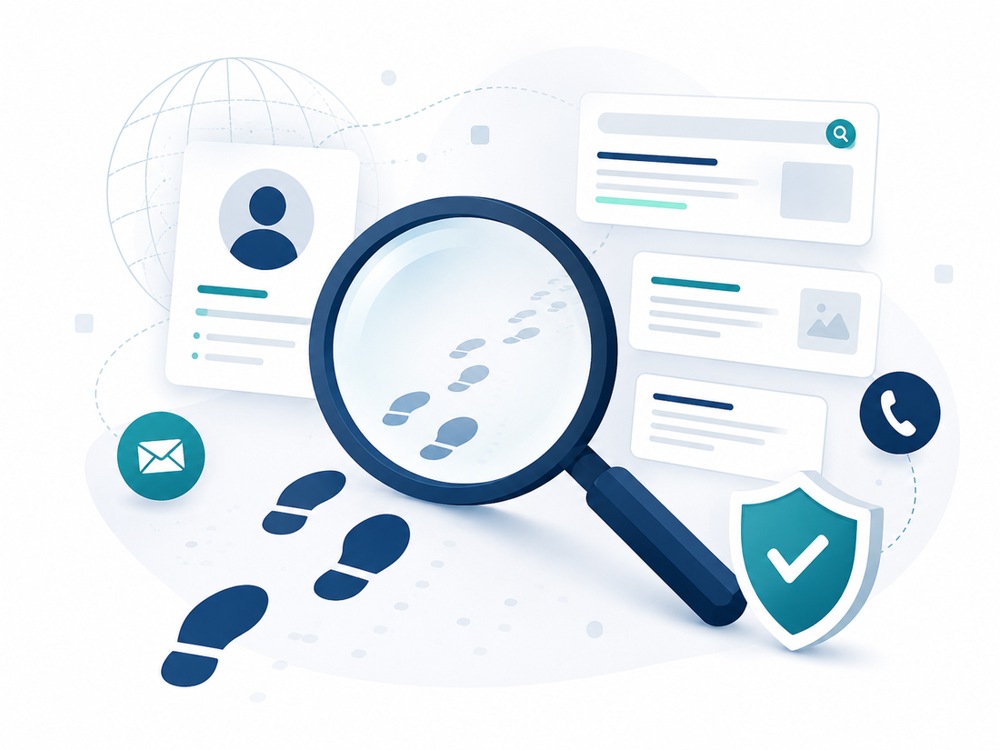

BTSY is Trinidad and Tobago's public digital fingerprint audit and online visibility company. We document what is publicly visible about you or your business online, and show you exactly what to improve.
Send a WhatsApp message to begin Use the audit request formBefore a hiring manager calls you in, before a client signs, before a business deal closes, someone searches a name. BTSY reviews the same public picture they see: public search results, public social profiles, public websites and directory listings. Nothing private, nothing hidden, no guesswork. Every audit is reviewed by a person before it reaches you, and every finding describes what a page actually shows.

For job seekers, professionals, founders, creators, and employers who want to see the public picture before a decision is made on it.
A review of your public search results and main public profiles, with a plain-language summary report and recommendations you can act on.
Everything in Standard, plus older content, secondary platforms, directory and image results, and fuller recommendations for your public presence.
Candidate-facing public visibility checks for businesses and hiring teams. One report per subject, plus an employer summary. Public data only.
For Trinidad and Tobago businesses whose customers cannot find them in search engines or AI assistants. Know how your business shows up before your customers search you, then decide what to fix.
A written audit of your search and AI visibility: a score out of 100 and a prioritized fix list. Proof before you commit to a build.
The full audit plus every fix delivered ready to paste in: schema markup, page titles and descriptions, FAQ content, rewrites, and consistency corrections.
The Builder package, then monthly fresh content, a profile consistency check, and a re-score against your baseline so you can see movement.
It is a structured review of what is publicly visible about you online: search results, public social profiles, public websites and directory listings. BTSY documents what actually shows up when someone searches your name and delivers a report with clear recommendations.
No. BTSY is a public digital fingerprint company. It reviews public-facing data only and never accesses private accounts, messages, credit records, police records, medical records, or deleted content. The audit shows you the same public picture a hiring manager or client sees.
Employers typically see your public search results, public social media profiles, images, and any pages that mention your name. Most people have never checked this picture for themselves. A BTSY audit documents it for you before an interview or promotion decision.
Personal audits start at TT$500 for the Standard audit, TT$900 for the Deep Dive, and TT$2,500 for Corporate candidate-facing checks. Business visibility audits start at TT$450 for the Snapshot.
No service can honestly guarantee removal of online content, a job, or a reputation outcome, and BTSY does not. The audit gives you an accurate picture of your public presence and practical recommendations you can act on.
Yes. The business visibility audits review how your business appears in search engines and AI assistant answers, then deliver a score and ready-to-use fixes: schema markup, page wording, FAQ content, and profile consistency corrections.
Send a WhatsApp message to 1-868-795-3112 or complete the BTSY audit request form. You will get a confirmation, the payment step, and a clear timeline.
BTSY was founded by Nyla Wellington in Trinidad and Tobago to give people and businesses an honest look at their public online presence before someone else takes that look first.
WhatsApp 1-868-795-3112 Email BTSY